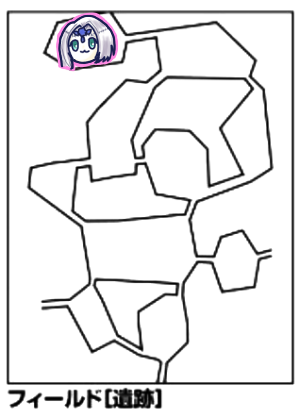
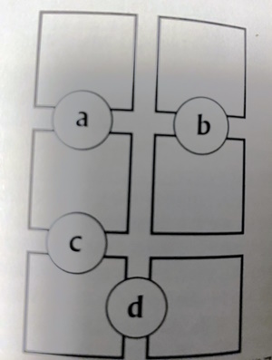
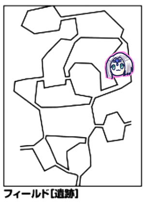
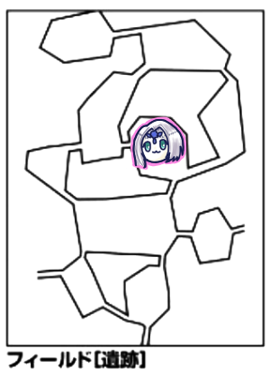

なんと諸事情で前回から半年近く空いてしまいました。
最近はこのキャンペーンどれだけかかるんだろうなとかそういう話ばかりしているような気がします。
久しぶりすぎるので何をやっていたかの確認から。
現在エターナルの扉の探索ミッションをしています。
石版当たり外れ関係なく3枚以上集めればクリアとなります。
そうです石版は見つけても当たり外れがあるのです。
石版を見つけたら鑑定はローレンスさんがやってくれるとのこと。
現在地は宮殿の遺跡。魔物に遭遇したところで終わっていました。
戦闘開始です。
宮殿の遺跡～震度11
魔物はポルターガイスト2体とマミー1体。ポルターガイストが5部位です。
GM「5部位ということはおわかりですね？余裕で突破して後ろ行く予定ですよ」
「ピーターの危険が危ない」
GM「君たちポルターガイストで全滅しかかったことあるんだよね」
みぞれ「渓谷の小屋ですね。ブルーローズがギリ黙らせた記憶がある」
ピーター「魔物知識判定します」
GM「両方弱点抜けました。ポルターガイストですが、動かないとコアがどれなのか分からないです。つまり君たちが先制取ったのでまだコアの位置はわかりません」
みぞれ「他にやることないのでグレネード投げます。20」
GM「マミー抵抗失敗。これポルターガイスト全部振るのかー、ポルターくんアンデッドのくせに抵抗値低いなあ。ころころ…はいポルターガイスト全滅です」
みぞれ「18点です」
GM「いってぇなあ」
GM「次の方どうぞ」
ピーター「え、じゃファイアーストーム撃ちます。23」
GM「どっちも抵抗失敗」
ピーター「あ回った、38点」
GM「しんだ」
ピーター「弱点2倍お忘れなく」
GM「なくてもしんでます」
みぞれ「マミー1残ってるんだけど」
GM「え？最初にみぞれのダメージが27点で」
みぞれ「私そんなダメージ出せてないです。18点ですよ」
GM「間違えた。うわギリギリ生きてるのかこれ」
タッシュ「それじゃ残り1人だしメイス片手に殴らせてもらおう」
みぞれ「タッシュ先生が行った！」
ピーター「タッシュ先生が行った！」
タッシュ「19で殴ります」
GM「回避！マミーは包帯の向こうから黒い目でタッシュ先生を見つめた！包帯が吹き飛びマミーはただの青い炎になった！『ほう、印持ちか』」
タッシュ「そうかアンデッドだから」
謎の声「これは面白い、印持ちが我が居城に来るとは。ヤツには悪いがこの獲物は私がもらおう」
みぞれ「これアンデッドジェネラルじゃない、別のやつだ」
タッシュ「もしかして俺様アンデッドに大人気」
ここでこの謎の声が我が宮殿の秘密の部屋に云々とか言ってたんですがメモれていませんでした。
GM「エターナルキャンペーン、タッシュ先生と秘密の部屋」
ブルーローズ「わたくし今エクスプロージョンについて調べていたところですの」
タッシュ「そんな呪文はありません！」
ブルーローズ「わたくしが出るまでもありませんわね！」
ナナシ「ナナシ出ますねー」
普通に当たって22点ダメージでした。
GM「しんだ」
みぞれ「私は探索かなー」
ブルーローズ「私はビビッドかなー」
ピーター「じゃあ剥いじゃうぞー、さん！剥ぎ取り+1で3！」
みぞれ「1ゾロじゃん」
ピーター「でも結果表だから1ゾロポイントもらえない」
みぞれ「じゃあ探索」
GM「遺跡だから探索できないよ」
ピーター「わたしまこうそうむしゃむしゃしたい」
みぞれ「じゃあ使います」
GM「この遺跡には時間制限がないので廃都のように弾かれたりはしません。今はお昼の12時半です」
ブルーローズ「これ遺跡から出るには普通に戻るしかないよね」
GM「そういうイベントじゃなければそうですね」
ブルーローズ「途中で寝たりできないですよね」
GM「GMが宣言しなければそうですね。これは小型の遺跡で、深度は最高で30になります。突破で最深部扱いにすることもあります」
「じゃ次行きましょうか」
GM「目標値は12になります」
「普通に行くか急いで行くかはななっしー先生次第ですね」
GM「違った冒険者レベル準拠だから17だ」
ナナシ「普通に探索で、19、成功」
GM「1d6」
ナナシ「順番に振ってかない？」
GM「じゃみぞれお願い」
みぞれ「はーい。5です。コロンビア」
宮殿の遺跡～震度16
GM「部屋にたどり着きました。魔法陣があります。みぞれさん1d6振ってください」
みぞれ「やだなー。4です」
GM「魔王陣は白く輝きました」
みぞれ「ウルトゥケだと同じ状況でHPMP2d6回復してますね」
ピーター「じゃ踏み込むー」
みぞれ「私もー」
GM「ピーターとみぞれがぴかぴかと光りだす！」
「おお！？」
GM「HPMP2d6回復！」
みぞれ「合ってた！」
ブルーローズ「これ人数制限ないよね？入ります。タッシュ先生一緒に入っちゃえば？」
タッシュ「入ります」
みぞれ「ななっしーは？」
ナナシ「ビビッドで回復するからいい」
ブルーローズ「びびびー」
みぞれ「ブルーローズHP結構減ってない？救命草使う？」
ブルーローズ「お願いします」
みぞれ「6ゾロ出た」
ブルーローズ「すごい回復した」
GM「難易度は17になります」
ナナシ「22、成功」
タッシュ「進行振ります。5」
宮殿の遺跡～震度21
GM「この遺跡は深度20が最後の部屋です。20以上になったので最後の部屋に突入しました」
「ここがタッシュ先生と秘密の部屋ですか」
「どこかで探さないといけないかもしれないよ」
GM「ここにはやっぱり怪物がいるんですよ。出てくるモンスターは、えっこんなもんでいいの？役不足じゃない？身長2mほどの全身が影でできたような怪物です。これ遭ったことあるね、ダルグブーリーが2匹です。もう1匹は陽炎のようになっていて姿が見えづらいです。プレデターって言うより光学迷彩の方がわかりやすいね」
ピーター「魔物知識判定します」
GM「はい弱点まで抜きました。1匹の方はゴードベルです。透明なのでなんか色々効果を受けます」
「なんか色々効果」
GM「命中-4とかですね」
ピーター「これ範囲はいけるのかな」
GM「乱戦を通過してピーターをころす。ダルグブーリーも影渡りでピーターを以下略」
ピーター「そんな執拗に狙わなくても」
タッシュ「始末しやすいキャラだよね」
ナナシ「これカケラ入ってるんですかね」
GM「ゴードベルに入ってます」
ナナシ「危ない、先制取れた、でもちょっと危ない目に遭ってみたくない？」
ブルーローズ「先制取る人が何言ってるの」
ナナシ「生きている実感をですね」
みぞれ「これHP3桁いくのかこっわ」
GM「このマシマシHPで生き残ってピーターにしんでいただく」
ピーター「わたしそんなGMに恨まれてますかー！？」
みぞれ「じゃグレネード投げる簡単なお仕事します」
GM「ダルグブーリーAのみ抵抗しました」
みぞれ「16点です」
GM「抵抗したやつも振ってください」
みぞれ「クリってないからこれ半分すればいいよ」
GM「いや振ってください」
みぞれ「え？そんなんだったっけ？まあいいけど、11点です」
ピーター「じゃ焼くか。ファイアーストーム」
GM「焼くって」
ピーター「ファイアジャベリン使えないんだものー」
GM「ダルグブーリーBだけ失敗しました」
ピーター「失敗22点、成功13点。あーあれ撃っとかなきゃ、えーと、パラミスを透明野郎に撃ちます」
GM「対象1体？」
ピーター「命中判定がないから…あー乱戦状態じゃないとダメなのか、じゃヴォーパルウェポンをブルーローズに撃っときます」
ブルーローズ「わーい」
タッシュ「あんまり技がないからファイアーボール撃ちます」
GM「技がないとか言ってくれるよね」
タッシュ「意外にないのよねこの先が」
GM「かつてはファイアーボールがあればとか言ってたのにね」
タッシュ「しょぼ…16」
GM「ダルグ両方同値抵抗」
タッシュ「なんだそりゃ」
GM「はい全員抵抗」
タッシュ「あっごめんこれ命中じゃなくてダメージの方振ってたわ」
GM「振り直しでお願いします」
タッシュ「20」
GM「ダルグAのみ失敗」
タッシュ「改めて、18点と10点です」
GM「ダルグ2匹とも死にましたー」
ナナシ「ナナシ前に出ます、バフ入れてゴードベルに挑発攻撃します。23」
GM「4ペナ入ります、振り直してください」
ナナシ「17」
GM「ゴードベル頑張れ！16」
ピーター「これでうさぎが生きる」
GM「デーモンフィンガーさえなければ！」
ナナシ「3回転40点！泣きの2回目いきます」
GM「泣いてないじゃん」
ナナシ「20」
GM「同値回避、透明化バンザイ」
ブルーローズ「じゃ近づいてー、キャッツアイ、スフィンクスノレッジ」
GM「こいつ当てる気でいやがる！こい！無駄遣いさせてやる！」
ブルーローズ「スフィンクスノレッジって命中も上がるんですよ。マッスルベア入れようかな？9点MP使ってー、26」
GM「なんだこれ、ペナ入ってる？」
ブルーローズ「入ってます」
GM「すげーな命中、あかんピーターを殺せない」
ブルーローズ「40点ダメージです」
タッシュ「これソード・ワールドやってるんだよね？」
ナナシ「俺の3回転と同じダメージなんだけど、ダイス目7だよこれ」
ブルーローズ「2回目いきます、25」
みぞれ「何やったらそんな値出る？」
ブルーローズ「日頃の行いかな」
GM「回避だめでーす」
ブルーローズ「1ゾロ」
みぞれ「日頃の行いかな？」
GM「じゃあこっちの番ですね、久しぶりだこっちの番。挑発攻撃をくらってるのでナナシを狙います。21！」
ナナシ「27」
GM「4ペナでこれかよ」
タッシュ「4ペナでブレード発動すんのかよ」
ナナシ「17点」
GM「2回目、19」
ナナシ「22、惜しい、ギリギリ発動しない」
ナナシ「レザーリボンで挑発攻撃いきますねー」
GM「挑発いる？」
ナナシ「22」
GM「クリティカル回避」
ナナシ「まじ？」
ブルーローズ「殴りに行くか」
GM「さあこいゴリラ」
ブルーローズ「あ、低い、19」
GM「20、避けた！」
ブルーローズ「スフィンクスノレッジをケチったのがうさぎの命運を分けた。2回目17」
GM「16、どうぞ、ダメージください」
みぞれ「うさちゃん死んだかと思ったわ」
ブルーローズ「うさちゃん生きてたわ、39点」
GM「しんだしんだしんだ、飛び散りましたー、残念です」
ピーター「ゴードベル剥ぎます。よし12(11+1)」
GM「透明な皮革です」
ナナシ「何気に透明な皮革4個目なんだけど」
ちなみに我々これひかわひかわ言ってたけど調べたらこれ読み方「ひかく」でした。
GM「さて、最後の部屋なので探索があります。目標は22」
ナナシ「23！」
GM「宝箱が出てきました」
ナナシ「開けまーす」
ブルーローズ「開ける前に罠を」
GM「ナナシが開けた、開けた瞬間に…ころころ、1d6=2、罠はありませんでした」
みぞれ「ダイス目によってはあったってことですか」
GM「そうですね。中身は2100ガメルです。更に宮殿のお宝探索表を振ってください」
ナナシ「いち！」
GM「完全に隠されているはずの床に隙間があります。秘密の部屋を発見しました」
ピーター「嫌がるタッシュ先生を引っ張りながら入ります」
GM「ころころ。1d6=5、そこは汚い小部屋でした。5つの瞳の紋章の石版を2個見つけました、運がいいね！そして初めて石版を入手したことで星を2個手にいれました。これでこの遺跡は終わったので地上へ戻ります。再挑戦も可能ですよ。時刻は1時です」
宮殿の遺跡から脱出し、エリア移動します。

GM「ここは美しい黄金色の柱が立ち並んでいます。柱には各種族の彫刻が彫り込まれています。静謐で清らかな空気を感じます。イベントはありません。ブルーローズd6振ってくれる？」
ブルーローズ「2です」
GM「わかりました」
みぞれ「え、なんだったんだ今の」
GM「なんでしょうね。中央には円形に柱が並んでいます」
ブルーローズ「なんだかステージみたいで素敵な場所ですわ」
GM「すごいでかいステージだよ、直径40mぐらいある。ステージっていうのはぴったりの表現だね」
「探索しますか」
GM「探索する順番だけ教えてくれる？目標は18」
みぞれ「まさか青い稲妻？」
ナナシ「トップバッターいきますね、22」
GM「名前を明かすことができない探索表を振ってください」
ナナシ「1」
GM「五王国の金貨を2d6枚入手しました」
ナナシ「3枚」
GM「どこの金貨かは好きに決めていいです」
みぞれ「前は振ってたよね」
ナナシ「じゃ振ろうか。4だからエッダで」
GM「探索してて分かったんだけど北側の部分には黄金の碑があり、その上部には5つの瞳の紋章が刻み込まれています」
みぞれ「どれぐらいの大きさですか？」
GM「高さ約5m、幅3mぐらいです。さっき手に入れた石版とちょうどおなじぐらいのくぼみが6つあります」
ブルーローズ「これはめてみたら偽物わかったりしないかな」
みぞれ「間違ってたら青い稲妻が振ってくるかもしれん」
GM「くぼみの画像を送ります」

ピーター「なにこのabcdっての」
GM「知らない文字です。ピーターでも知らないです。正確に書き写してローレンスに相談することもできます」
みぞれ「確かカメラがあったはず。マナカメラ使います。ぱしゃり」
ナナシ「ここで待機してもっかい探索してみる？」
みぞれ「そうだねここ何も起こらないしね」
ブルーローズ「その前にビビッドしておきますわ」
GM「はい、じゃここでビバークしたということでブルーローズ1d6振ってください」
ブルーローズ「1」
みぞれ「これ気になるな」
ナナシ「探索します」
GM「目標値22ね」
ナナシ「上がってるねぇ…19」
ブルーローズ「あーこれ使えたらなあ。LV11にブレスってのがあってね、全能力値を6ずつ上げるっていうのがあるのね。しかも3分」
「すげぇ」
GM「さて、立ち去ろうとする時にブルーローズの足に何か当たりました。手のひらサイズの平べったい石です」
ピーター「調べまーす。20」
GM「これは石ではなくウロコです。この母体はものすごい大きいと思われます。体長20mぐらいと推測されます」
タッシュ「これ空見上げたらフラグ回収しちゃうやつかな」
ブルーローズ「ここ来る度に1d6振るの怖くなるね。でもあのステージで歌ってみたいわね」
みぞれ「ビビッド無駄にステージの上で歌ってたじゃないですか」
ブルーローズ「気持ちよかったー！」

みぞれ「イベント6です」
GM「タッシュ先生いい勘だ、急に空が曇りました、#4から#1に何かが飛んで行くのが見えました」
ピーター「判定できる？」
GM「できるよ」
ピーター「20」
GM「弱点は抜けませんでした。LV18モンスターグレータードラゴンです」
タッシュ「いやいやいやいや」
ブルーローズ「わたくしこのウロコを返した方がよいかしら」
タッシュ「ぽっけないないしちゃいなさい」
実はグレータードラゴンは既に前回弱点抜いておりました。判定する必要なかった。
前回からかなり時間が空いたから仕方がないですね。

GM「ここは庭園です。庭園イベント表をどうぞ」
タッシュ「5です」
GM「遺跡イベントです」
ここ、私のメモ表記が「2表→6」とか書かれてたんですけど、遺跡イベントで2を振って別表に移って6を出したんだと思われます。
GM「強力な魔物と遭遇しました。キャラクターのレベルをプラスしたモンスターと遭遇せよ、とあります」
タッシュ「あかんやつじゃないですかそれ」
GM「1d3振ってくれる」
タッシュ「1」
GM「見たことない連中が揃いますね」
ピーター「そりゃ見たことないでしょうよ」
GM「片方は4足歩行の機械です。胴体ほどの大きさの大砲を背負っています。もう片方は黒い肌をしたダークトロールぽいやつです。こいつは2匹います」
ピーター「魔物知識判定しまーす」
G<「ダークトロールアデプトとウォードゥームです。両方弱点抜きました。ウォードゥームは属性ダメージを受けるとその属性に対するバリアが張られます。つまりFFのバリアチェンジですね」
「学者で見破らなきゃ」
ナナシ「先制判定します。1ゾロ」
「櫓使え櫓」
ナナシ「はい成功」
ピーター「ファイアジャベリンで撃ちます、MPほとんど使っちゃう…」
GM「ウォードゥームの機関砲と胴体Bが抵抗しました。あとは失敗」
ピーター「25点、抵抗12点ダメージです」
GM「ウォードゥームに炎バリアが貼られました」
タッシュ「うーん…」
GM「悩んでますね、選択肢があるということですか」
タッシュ「エネルギージャベリンを5倍がけしようかなと思って。砲台壊したいよね。というわけで19。あーファンブルしなかったよかった」
GM「機関砲のみ抵抗しました」
タッシュ「21点と12点です」
みぞれ「うーんこれダークトロールくんグレネードで落とせるかな、でもグレネードしかないんだよなー。ぽーい。22」
GM「両方抵抗失敗しました」
みぞれ「ダメージ出ろ！あっ回った、29点！」
GM「ダークトロールしにましたー」
ナナシ「いけ、ブルーローズ！フォースエクスプロージョンだ！」
ブルーローズ「よぉーし！これがやりたかったんだー！近づいてー」
GM「ダッシュして近づけるのずるいよな」
タッシュ「ナイトメアそこが強いよな、プレートメイルつけててもいけるもんな」
ブルーローズ「えい！24！」
GM「全部位失敗しました。さあこい」
ブルーローズ「19点！」
GM「胴体A落ちました」
みぞれ「あれ？これ機関砲も落ちてない？」
GM「あれ？あ、機関砲HP60で計算してた」
ピーター「言うて一発ぐらいなら耐えられるけどね、たぶん」
みぞれ「たぶん」
ナナシ「じゃ残った胴体を殴ります。23」
GM「ファンブル、ダメージ判定2回中高い方を採用」
ナナシ「23と22、23点の方で」
GM「倒れました」
GM「ここでも自由行動に追加があります『遺跡を探す』という行動が取れます」
ナナシ「それは探索判定でやるのかな」
GM「宣言が必要です。判定自体は探索判定と同じです。通常探索は18、遺跡は15が目標です」
タッシュ「ダークトロール剥ぎます。お、11」
GM「奇妙な聖印、3300ガメル白Sです」
「いいもの剥いだね」
ナナシ「遺跡探索します。21」
GM「庭園の遺跡を発見しました。これ名前ついてるんですよ。さっきのは宮殿の遺跡。ちょっと違います」
みぞれ「じゃあ#3にあったのは？尖塔の遺跡？」
GM「尖塔の遺跡」
タッシュ「セントウは戦うやつ？」
GM「尖った塔ですね」

GM「ここは円形の広場です。石柱が立っていて目に似た模様で埋め尽くされています。広場イベント表を振ってください。ピーターお願いします」
ピーター「5」
GM「遺跡イベントです」
ピーター「6」
GM「強力な魔物との遭遇です、1d3振ってください」
ピーター「えっまた？3」
GM「片方は黒い体毛に炎のたてがみを持つ馬に似た生き物が2匹。もう片方は頭部に大きな角を持ち瘴気を振り撒いています。その両腕は丸太のように大きいです。体長は4mぐらいで、歩く度に身体から落ちるものが沼に変わっていきます」
ピーター「じゃあ怖いやつから魔物知識判定します」
GM「どっち」
ピーター「沼になる方です。23」
GM「ブガラドレです」
タッシュ「乱戦エリアで自動的に3点ダメージ、追加ダメージありとな」
ピーター「馬いきます、24」
GM「ゴーストホースです。どちらも弱点抜きました」
ナナシ「先制判定しまーす」
GM「先制ね、馬が早くて20なのよ」
ナナシ「じゃケンタウロスレッグ使いまして、はい25、ふぅ」
ピーター「やること変わらないのでファイアストーム撃ちます。20」
GM「馬A抵抗、馬B失敗(後ろ半身ファンブル)、ブラガドレ胴体抵抗、右腕抵抗、左腕失敗です」
ピーター「抵抗失敗22点、あと13点です」
タッシュ「スリーウェイライトニングをゴーストホースの前半身×2とブガラドレの胴体の3箇所を起点に確実化してぶっぱなします、MP減ったなー、24と22、24で」
GM「これ処理大変だな。ブガラドレの右腕とゴーストホースの後半身だけ避けました。当たった奴は全員抵抗失敗です」
タッシュ「16点ダメージです」
みぞれ「うーんグレネードで、19」
GM「全員抵抗しました」
みぞれ「かなしぃ、半減10点です」
GM「ブガラドレの左腕が消し飛びました」
ブルーローズ「これ私がコアーシブ唱えたらブガラドレは近づいてこれなくなるんですかね」
GM「うーん、ブガラドレの砲弾は狙ってるわけじゃないので無効ということで」
ブルーローズ「これ胴体狙って腕に庇われても追加攻撃は胴体にいきますか」
GM「いきます」
ブルーローズ「じゃあブガラドレ殴っちゃおうかな～」
GM「そんな可愛く言われても」
ブルーローズ「じゃあ近づきます」
GM「生命抵抗してください、20」
ブルーローズ「23！ゴリラの生命力を舐めるなよ！キャッツアイいるかな」
タッシュ「命中いくつあるの」
ブルーローズ「基本14で、諸々乗せて17」
タッシュ「一番早いやつでも5差あるね」
ブルーローズ「じゃいらないか。魔力撃トンファーで胴体狙います。29」
GM「回避できません。ダメージ出してください」
ブルーローズ「えいっ！55点！」
タッシュ「回った」
GM「右腕が代わりにダメージを受けて沈みます。ぼきっ」
ブルーローズ「追加攻撃します。24」
GM「17」
ブルーローズ「42点！よし威力出た！」
みぞれ「威力いらないから！1ゾロさえしなければワンパンできるのよこれ」
GM「残り馬2体です」
ナナシ「弱ってる方をなんとか落としたい」
タッシュ「お願いします」
ナナシ「クリティカルレイ切ります。デーモンフィンガーとジャイアントアーム使っとこうかな。25」
GM「ファンブル。ダメージに攻撃者のレベルが追加される」
ナナシ「44点です」
GM「これ10追加してあるんだよね。死んだ」
ナナシ「挑発攻撃でもう1体の馬の前半身を狙います。24」
GM「19」
ナナシ「24点、あ、さっきの攻撃、エンハンスが2点余分に入ってましたすいません」
GM「じゃあ死んでなかったね。今の攻撃で馬Bが落ちたことにしよう」
GM「よしこっちのターンだ！それじゃうさぎを殺そう。ダークホースの赤い視線がうさぎを襲う！23、よし出目が高い」
みぞれ「しかしうさちゃんはそれを超える！」
ピーター「これ精神抵抗でしたっけ？」
GM「いや生命抵抗」
みぞれ「生命抵抗か！」
ピーター「23！」
GM「消滅しました」
ピーター「じゃお茶飲んでます」
みぞれ「じゃ私は後ろに下がってうさぎをモフります」
GM「生き残ったら絶対お前ら殺すからな」
ブルーローズ「馬の上半身殴ります！24」
GM「17」
ブルーローズ「34点！2回目いきまーす、22」
GM「22回避！」
タッシュ「ナナシさん先に対応していただいてよろしいですか」
ナナシ「じゃ金B使いますか。23」
GM「17」
ナナシ「20点です」
タッシュ「馬のHP残り推定いくつ？」
みぞれ「9」
タッシュ「微妙だなー」
GM「来るかい？君が殴るとナナシが喜ぶ」
ナナシ「タッシュ先生のーちょっといいとこ見てみたいー」
タッシュ「じゃあ殴るか、19」
GM「22、避けた！」
GM「じゃあこっちの番」
みぞれ「あれピーター何かしなくていいの」
ピーター「ナナシが燃えるのを楽しみに見てる」
GM「視線のレーザービーム！生命抵抗お願いします、24」
ナナシ「あマジか、これ無理だわ、20」
GM「ナナシが燃え上がる！燃え上がーれー！17点炎ダメージです」
ナナシ「ナナシ行っていいすか、あやばい19」
GM「行くぜ回避！23！次誰だ！」
ブルーローズ「殴ります。魔力撃トンファーで上半身。27」
GM「22」
ブルーローズ「まだマッスルベアが生きてるからー、38点！」
GM「死亡しました」
GM「ここは特別な探索はありません」
ピーター「でかいやつ剥ぎますね」
タッシュ「ワンチャンあるのは馬だよ、13がある」
ピーター「じゃそっち剥ぎます。12(=11+1)、惜しいー」
ブルーローズ「ビビッド歌います、クリティカル」
みぞれ「とても気持ちよく歌えた」
ブルーローズ「円形の広場で気持ちよく歌った」
ナナシ「普通に探索するか。18」
GM「成功」
ナナシ「5」
GM「鋭利な石1d6個です」
ナナシ「2個」
本日はここで打ち切りとなりました。
GM「これ4番に行った時に強敵が出たら笑うんだけどね、次回叶えてほしいよね」